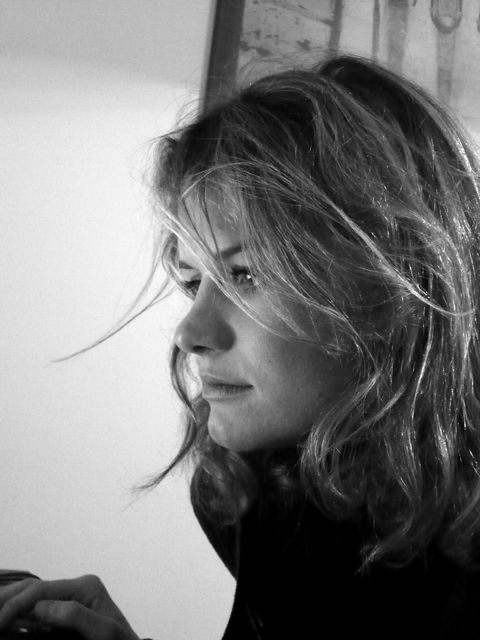
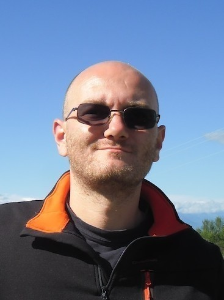
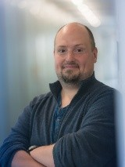

<section class="bg-primary" id="comitee">
  <aside>
    <div class="container">
            <div class="col-lg-8 col-lg-offset-2 text-center">
                <h2 class="section-heading">Programm Comitee</h2>
		<hr class="light">
	    </div>
	    <div class="col-lg-12 text-center">
		<div class="row">
                	<div class="col-lg-3 text-center">
                   	
			<p style="color:white;"><a href="https://lipn.univ-paris13.fr/~gabor/">Kata Gábor</a></p>
					Laboratoire d'Informatique de Paris Nord<br>
                	</div>
                	<div class="col-lg-3 text-center">
                   	
			<p><a href="https://www.ims.uni-stuttgart.de/institut/mitarbeiter/reiterns/">Nils Reiter</a></p>
					Stuttgart University<br>
			</div>
			<div class="col-lg-3 text-center">
                   	
			<p><a href="https://www.ims.uni-stuttgart.de/institut/mitarbeiter/klingern">Roman Klinger</a></p>
					Stuttgart University<br>
			</div>
			<div class="col-lg-3 text-center">
                   	
			<p><a href="https://www.uni-trier.de/index.php?id=64027">Christof Schöch</a></p>
					Trier University<br>
			</div>
                </div>
	    </div>
	    <div class="col-lg-8 col-lg-offset-2 text-center">
	    <p>More members of the Programm Comitee will be revealed soon.</p>
	    </div>
    </div>
    </section>
